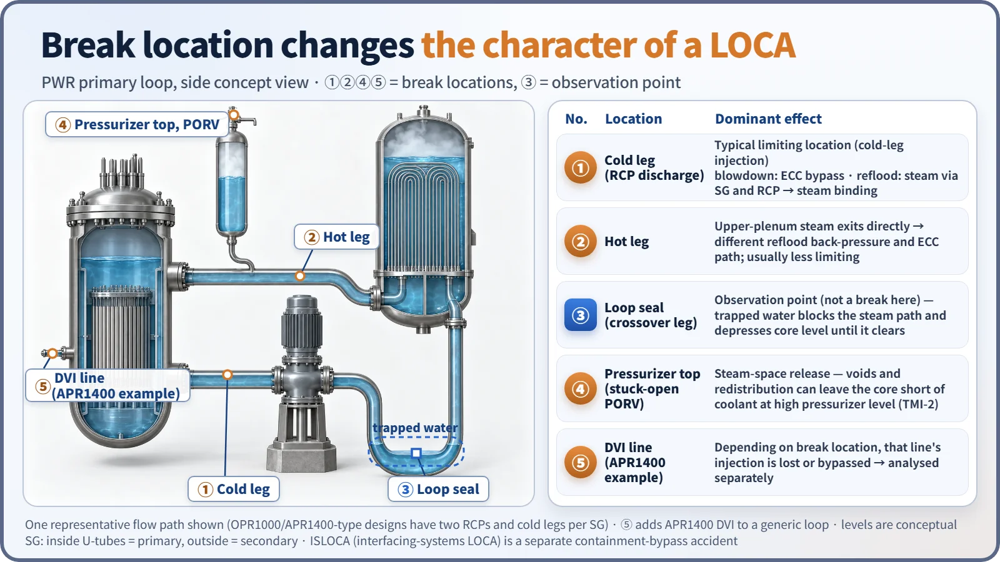
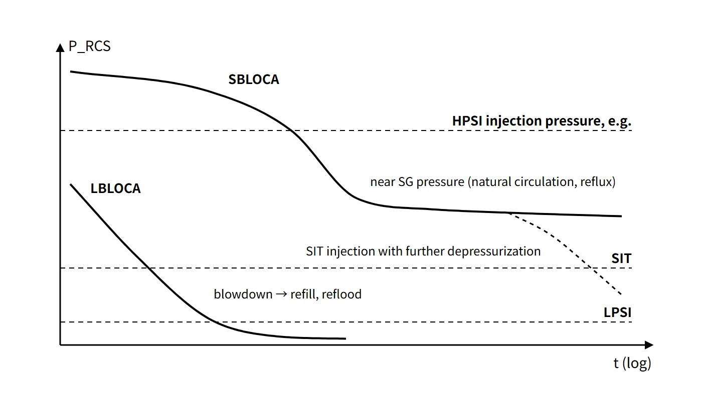

Accidents, Safety Analysis & Severe Accidents · C-SA-021
Loss-of-Coolant Accident (LOCA) — How Break Size and Location Change the Phenomena and the ECCS Response
From very small breaks to a double-ended guillotine break: why size and location change the dominant phenomena, the main ECCS function and the operators' time margin.
A loss-of-coolant accident (LOCA) is a postulated accident in which the reactor coolant pressure boundary (RCPB) fails and coolant escapes faster than the normal make-up (charging) system can replace it; the whole spectrum, from very small breaks up to a double-ended guillotine break (DEG) of the largest pipe, is analysed as a design basis accident (10 CFR 50.46(c)(1)).
This note is the LOCA overview.
Principle and mechanism
Size classes — there is no single regulatory definition
| Basis | Classes | Source |
|---|---|---|
| Deterministic analysis | Large / (medium) / small — evaluated separately because the dominant phenomena and analysis codes differ | Boundaries depend on the methodology (e.g. about 1 ft² for Westinghouse-type, about 0.5 ft² for CE-type) |
| PSA initiating events | Large: equivalent diameter above 6 in / medium: about 2–6 in / small: about 0.5–2 in / very small: 10–100 gpm | NUREG/CR-5750 |
| Leakage | Within charging capacity | RCS leakage LCO in the technical specifications |
The point of classifying is that each size has different dominant phenomena, a different main ECCS function and a different time margin for the operators.
Dominant phenomena by size
- Large break (LBLOCA): the RCS depressurizes to near containment pressure within tens of seconds. The sequence is blowdown (early CHF, redistribution of stored heat) → refill (the SITs fill the lower plenum) → reflood (quench front rises, steam binding) → long-term cooling. Fuel stored heat and the reflood rate determine the PCT.
- Medium break (MBLOCA): depressurization does not reach the low-pressure injection range quickly, and HPSI alone is not enough. The key is when the SITs come in; the characteristics of both large and small breaks mix.
- Small break (SBLOCA): after subcooled depressurization, once the pressurizer empties and the system saturates, RCS pressure stays near the SG secondary pressure for a long time. The SGs are then the heat sink, and decay heat leaves by single-phase → two-phase natural circulation → reflux condensation. The event extends over hundreds to thousands of seconds.
In a small cold-leg break the loop seal matters. Water trapped in the U-shaped crossover leg on the RCP suction side blocks the escape path for core steam (hot leg → SG → crossover leg → break). Until it clears, the pressure balance depresses the level on the core side, which can be briefly uncovered. When it clears, the steam escapes and the level recovers. If HPSI flow then cannot keep up with boil-off and discharge, the core level falls again (boil-off). It recovers when further depressurization, for example by secondary-side cooling, brings in the SITs or lets HPSI catch up. This order and timing are a representative path that varies with break size and location and with injection conditions. In a hot-leg break the steam leaves directly, so the loop seal has little effect.
![Conceptual RCS pressure versus log time from 1 to 10,000 seconds: the large break falls from about 9 MPa to near containment pressure within tens of seconds, the medium break falls steadily depending on the injection and discharge balance, and the small break drops from 15.5 MPa to a plateau near the assumed SG secondary pressure of about 7 MPa, with a dashed further-depressurization path to the point where SIT injection becomes possible; beside it a table comparing time scale, injection and cooling means and thermal-hydraulic issues for large, medium and small breaks](../../assets/images/concepts/c-sa-021-loss-of-coolant-accident/fig1-break-spectrum-pressure.webp)
Effect of break location
For an LBLOCA in a cold-leg-injection PWR, the cold-leg (RCP discharge) break is usually limiting. During blowdown, part of the water injected into the other cold legs flows around the downcomer and out of the break (ECC bypass). During reflood, core steam has to pass through the hot leg → SG → RCP to escape, which creates back-pressure (steam binding). In a hot-leg break, upper-plenum steam leaves directly through the break, changing the reflood back-pressure and the ECC flow path, and it is usually less limiting. In the APR1400, all four SITs and four safety injection pumps inject directly into the reactor vessel (DVI), and the IRWST is a water source inside containment, so there is no switchover to recirculation. Instead, the issue is direct bypass, in which injected water is swept out by steam in the upper downcomer, and a DVI line break is a design-specific case in which, depending on break location, the injection of that line is lost or bypassed; it is analysed separately. In a break at the top of the pressurizer (stuck-open PORV), void formation and coolant redistribution in the RCS mean the core can be short of coolant even when the pressurizer level is high.

What it means in a plant
Operator actions — RCP trip criteria (after TMI)
If the RCPs keep running during an SBLOCA and then stop when inventory is at its lowest (for example on loss of off-site power), the mixed steam and water separate, the core level drops sharply and the PCT rises greatly. NUREG-0737 II.K.3.5 and GL 83-10 (1983) therefore required RCP trip criteria. Westinghouse plants use symptom-based criteria such as low RCS pressure from the WOG methodology (GL 85-12). CE plants (including the OPR1000 design) use Trip-2/Leave-2: two pumps are tripped first at low pressure, and the other two are tripped once a LOCA is diagnosed; for a non-LOCA depressurization the remaining two keep forced circulation.
Other actions: confirm the SIAS and diagnose a LOCA from rising containment pressure, radiation and sump level with no change in secondary-side radiation (distinguishing it from MSLB and SGTR). For a small break, depressurize by rapid secondary-side cooldown to help HPSI and SIT injection. Then provide long-term cooling by recirculation and simultaneous hot-leg injection.
Upper-head voiding during a LOCA
With the RCPs off and natural circulation, the reactor vessel upper head is outside the main flow path and hot water stagnates there. If the RCS is then cooled and depressurized, the head fluid falls below its saturation pressure and flashes. Symptoms are an abnormal rapid rise in pressurizer level during depressurization or spray, sluggish pressure control, and a falling upper-head level on the reactor vessel level monitoring system (RVLMS). The response is to stop depressurizing and repressurize to restore subcooling, restart an RCP if conditions allow, and vent through the reactor coolant gas vent system (RCGVS, NUREG-0737 II.B.1). Venting stops on recovery of head level, pressurizer level limits, loss of the subcooling criterion, or the containment hydrogen concentration limit.
Other related topics
- Hydrogen: the hydrogen sources in a design basis LOCA are the Zr–steam reaction, radiolysis of water, corrosion of Al and Zn, and dissolved hydrogen.
- ISLOCA: if the valves at the boundary between the high-pressure RCS and low-pressure connected systems fail, the low-pressure piping outside containment ruptures, producing a bypass accident.
- LBB and sumps: LBB only removes dynamic effects such as pipe whip from the design; the LOCA used for ECCS design remains. GSI-191 is the issue of debris clogging the recirculation sump strainers.
Worked example — a LOCA event tree
Take an event tree with the headings pipe rupture (frequency P_I) → emergency core cooling (failure probability P_E) → fission product removal (failure P_F) → containment integrity (failure P_C). The most severe sequence is IV: core cooling succeeds, but fission product removal and containment both fail. Its frequency is P_IV = P_I(1 − P_E)·P_F·P_C ≈ P_I·P_F·P_C, because P_E is small.
Regulatory and design criteria
For example, the US NRC framework:
| Basis | Key point |
|---|---|
| 10 CFR 50.46(c)(1) and (b), Appendix K | LOCA definition, ECCS acceptance criteria and evaluation models |
| SRP 15.6.5 | Review of break size and location spectrum analyses |
| NUREG-0737 (1980) | II.K.3.5 RCP trip, II.K.3.30 and 31 SBLOCA evaluation models, II.B.1 gas venting |
| GL 83-10 and 85-12, GL 81-21 | RCP trip criteria; natural circulation cooldown and upper-head voiding |
| GDC 4 and SRP 3.6.3, GL 2004-02 | Exclusion of dynamic effects by LBB; sump strainers |
In the US, the 50.46c rulemaking was returned by the Commission (SRM) on 11 April 2024 and has not been issued.
Easily confused pairs
| LBLOCA | SBLOCA | |
|---|---|---|
| Depressurization | Near containment pressure within tens of seconds | Long plateau near SG secondary pressure |
| Core uncovery | Fully uncovered right after blowdown | Gradual, through loop seal and boil-off |
| Main ECCS | SIT, LPSI | HPSI and secondary-side cooling, later SIT |
| Heat removal | Break discharge, reflood | SG natural circulation, reflux |
| Operators | Almost no time margin | RCP trip and depressurization actions decide the outcome |
The LBLOCA is not always the most dangerous. In PSA, the SBLOCA contribution is often larger because of its frequency and the role of operator actions.
Key points at a glance
- Definition: loss of coolant beyond charging capacity through RCPB failure, up to a double-ended break of the largest pipe (50.46(c)(1)).
- Classes: large, medium, small (deterministic boundaries depend on the methodology; PSA large break > 6 in).
- LBLOCA: blowdown → refill → reflood → long-term cooling; SIT and LPSI; rapid depressurization in tens of seconds.
- SBLOCA: plateau near SG pressure; natural circulation and reflux; loop seal clearing; boil-off; HPSI and secondary-side cooling.
- Location: cold-leg break limiting through ECC bypass and steam binding; APR1400 DVI break analysed separately.
- RCP trip: a delayed trip makes the level drop sharply → post-TMI criteria (CE Trip-2/Leave-2).
- Upper-head voiding: stagnant hot water flashes → repressurize, vent through the RCGVS.
- Acceptance: five ECCS criteria including PCT 1,204 °C (10 CFR 50.46(b)).
